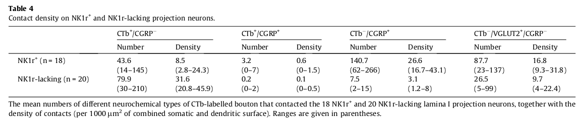

<?xml version="1.0" encoding="UTF-8"?>
<table title="table4" id="table4" class="tabcontent" xmlns="http://www.w3.org/1999/xhtml">
 <tr>
  <td>
   
   <p>target/pdftable1/10.1016_j.pain.2014.08.023/tables/table4/table.png</p>
  </td>
  <td>
   <table class="table">
    <caption/>
    <tr>
     <th class="cell">Number </th>
     <th class="cell">Density </th>
     <th class="cell">Number </th>
     <th class="cell">Density </th>
     <th class="cell">Number </th>
     <th class="cell">Density </th>
     <th class="cell">Number </th>
     <th class="cell">Density </th>
    </tr>
    <tr>
     <td class="cell">NK1r ^{+}</td>
     <td class="cell">(n = 18)</td>
     <td class="cell">43.6</td>
     <td class="cell">8.5</td>
     <td class="cell">3.2</td>
     <td class="cell">0.6</td>
     <td class="cell">140.7</td>
     <td class="cell">26.6</td>
     <td class="cell">87.7</td>
     <td class="cell">16.8</td>
    </tr>
    <tr>
     <td class="empty"/>
     <td class="empty"/>
     <td class="cell">(14–145)</td>
     <td class="cell">(2.8–24.3)</td>
     <td class="cell">(0–7)</td>
     <td class="cell">(0–1.5)</td>
     <td class="cell">(62–266)</td>
     <td class="cell">(16.7–43.1)</td>
     <td class="cell">(23–137)</td>
     <td class="cell">(9.3–31.8)</td>
    </tr>
    <tr>
     <td class="cell">NK1r-lacking (n = 20)</td>
     <td class="empty"/>
     <td class="cell">79.9</td>
     <td class="cell">31.6</td>
     <td class="cell">0.2</td>
     <td class="cell">0.1</td>
     <td class="cell">7.5</td>
     <td class="cell">3.1</td>
     <td class="cell">26.5</td>
     <td class="cell">9.7</td>
    </tr>
    <tr>
     <td class="empty"/>
     <td class="empty"/>
     <td class="cell">(30–210)</td>
     <td class="cell">(20.8–45.9)</td>
     <td class="cell">(0–2)</td>
     <td class="cell">(0–0.5)</td>
     <td class="cell">(2–15)</td>
     <td class="cell">(1.2–8)</td>
     <td class="cell">(5–99)</td>
     <td class="cell">(4–22.4)</td>
    </tr>
   </table>
   <p>target/pdftable1/10.1016_j.pain.2014.08.023/tables/table4/table.svg.html</p>
  </td>
 </tr>
</table>
